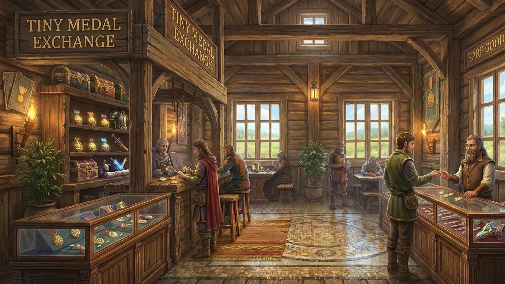
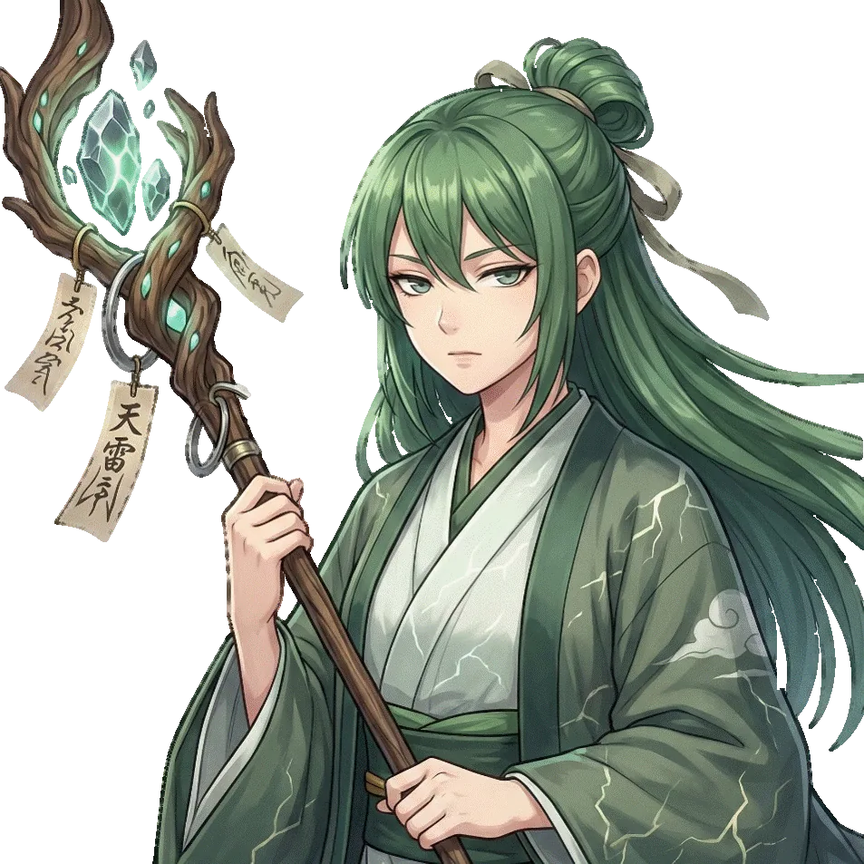
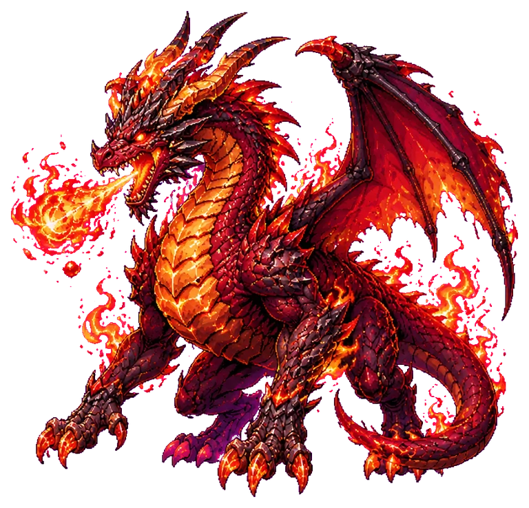
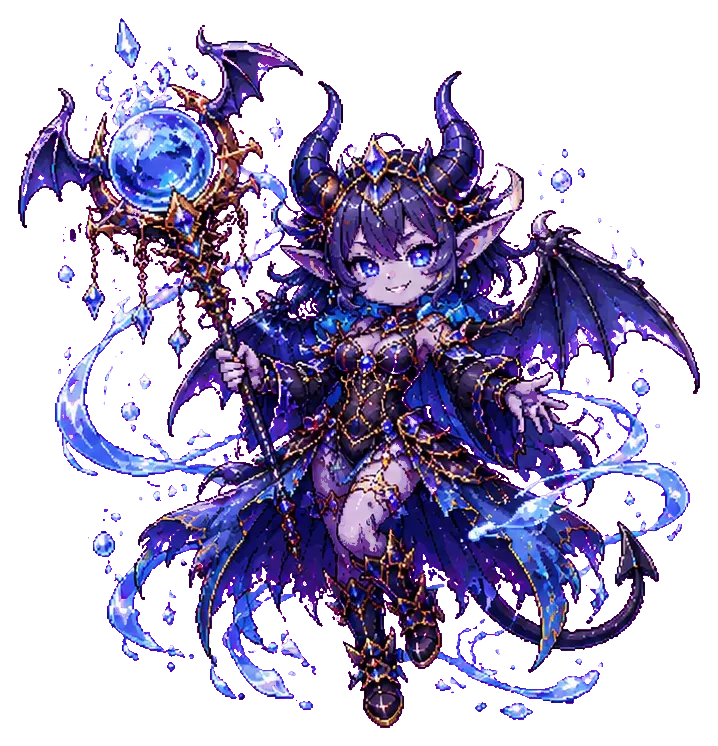
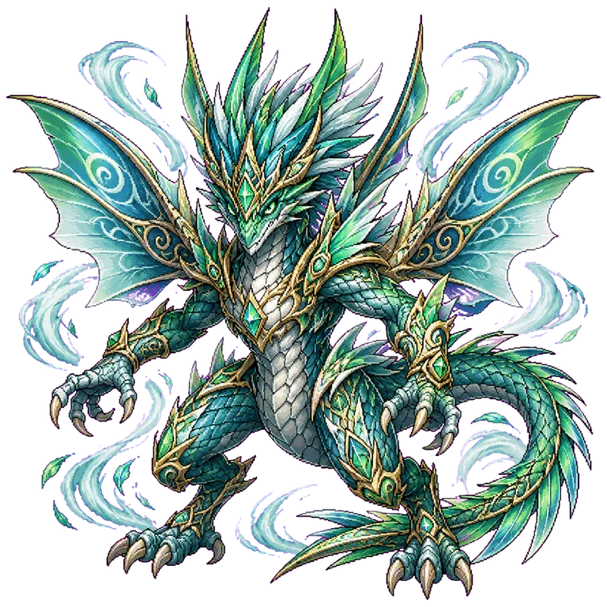

GAME FILE 01 / IN DEVELOPMENT
拾い、鍛え、編成し、深部へ進む。
スマートフォン向けブラウザ・ハック＆スラッシュRPG。
OVERVIEW
PRISMA ABYSS
ダンジョンを探索し、装備を集め、仲間を編成して進む開発中のRPGです。ブラウザから起動でき、スマートフォンでの操作を中心に調整されています。
本ページではゲーム本体と分離して、作品内容、セーブ方式、開発上の注意事項を確認できます。広告を設置する場合も、ゲーム開始ボタンや操作領域と十分な距離を確保します。
FEATURE REPORT
ゲームの特徴
探索と収集
ダンジョンを進みながら装備やアイテムを集め、次の探索に備えます。
装備の更新
入手した装備を比較し、編成や育成方針に合わせて戦力を整えます。
仲間編成
仲間の組み合わせを考え、状況に応じたパーティーで攻略します。
ゲーム内ビジュアル

PARTY FILE
CHARACTERS

ENEMY FILE
MONSTERS



BEFORE PLAY
プレイ前のご案内
- 開発版です。仕様やバランス、セーブデータ互換性を予告なく変更する場合があります。
- セーブデータは端末側に保存されます。ブラウザのデータ削除や端末変更に備え、ゲーム内のエクスポート機能をご利用ください。
- 不具合報告について。再現手順、使用端末、ブラウザ名を添えていただくと確認しやすくなります。
掲載画像は、制作者の許可に基づき RPG-TEST リポジトリ内のゲーム素材を使用しています。